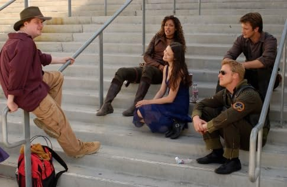
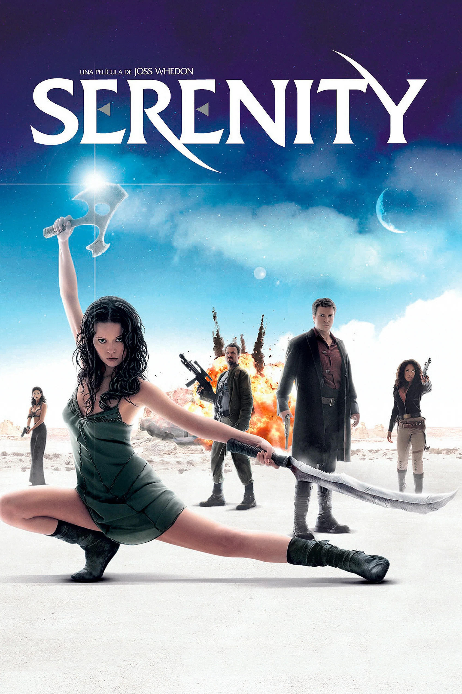
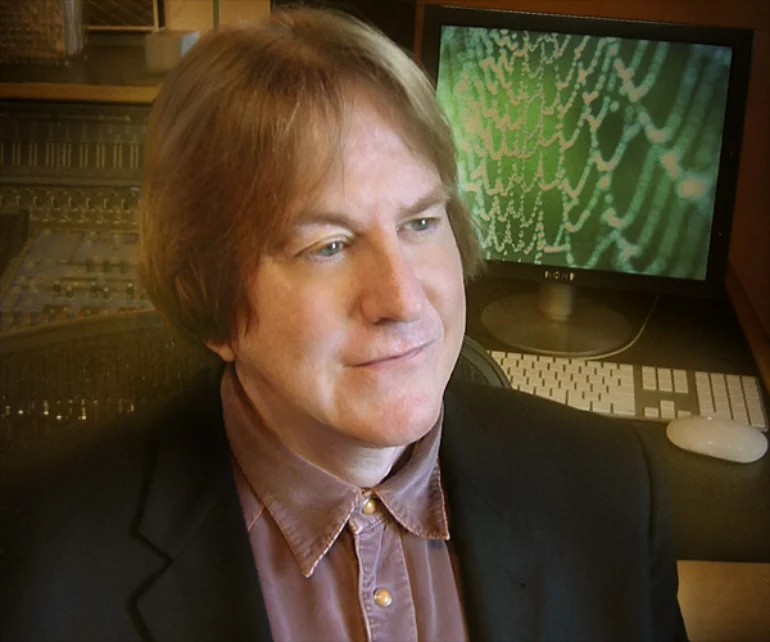

La Producción Detrás del Mito
Concepción y Origen Espacial
La serie fue creada por Joss Whedon tras leer la novela histórica The Killer Angels (de Michael Shaara), la cual narra los eventos de la Batalla de Gettysburg. Whedon buscaba explorar el punto de vista de aquellos combatientes que perdieron una guerra civil y se vieron obligados a buscarse la vida en los márgenes de una sociedad controladora.

A diferencia de otras producciones de ciencia ficción contemporáneas, el universo de Firefly se planteó con un enfoque realista: no existen alienígenas, el viaje espacial no simula sonidos en el vacío cósmico y la tecnología combina la alta sociedad de los planetas centrales con la precariedad del viejo oeste en las colonias periféricas.
Ir arribaEl Fenómeno Browncoat: El Rescate de los Fans
A pesar de la visión de su creador, la cadena televisiva Fox saboteó de manera involuntaria la emisión original en 2002. Transmitió los episodios alterando el orden cronológico narrativo (comenzando por el segundo episodio "The Train Job" en lugar del piloto doble "Serenity") y modificó constantemente los días de emisión. Esto generó confusión en el público y bajas mediciones de audiencia, desencadenando su cancelación prematura con solo 11 de sus 14 episodios emitidos.

Sin embargo, la comunidad autodenominada "Browncoats" (Casacas Marrones, en honor a los independentistas de la serie) organizó masivas campañas de recaudación de fondos y peticiones masivas. Este fenómeno de culto disparó las ventas de los sets de DVD originales, demostrando un éxito comercial tardío tan rotundo que obligó a Universal Pictures a comprar los derechos para producir la película secuela Serenity (2005), concluyendo oficialmente la historia.
Material Audiovisual: Podés profundizar en esta increíble hazaña comunitaria viendo nuestro video documental sobre el esfuerzo de los fans en la sección de multimedia.
Ir arribaLa Identidad Musical y su Banda Sonora
El componente sonoro fue vital para cementar la atmósfera del western espacial. El tema de apertura, "The Ballad of Serenity", fue escrito por el propio Joss Whedon e interpretado por el músico de blues Sonny Rhodes. Sus versos sintetizan la filosofía de supervivencia y libertad del Capitán Mal Reynolds:
"Quítame la tierra, quítame el mar, llévame a donde no pueda estar. No me importa, sigo libre, no puedes quitarme el cielo..."(Traducido al español)

La composición del resto de la banda sonora estuvo a cargo de Greg Edmonson, quien fusionó de manera brillante instrumentos tradicionales como el violín, el banjo y la guitarra acústica con arreglos étnicos asiáticos, reflejando el crisol cultural del sistema estelar.
Ir arriba